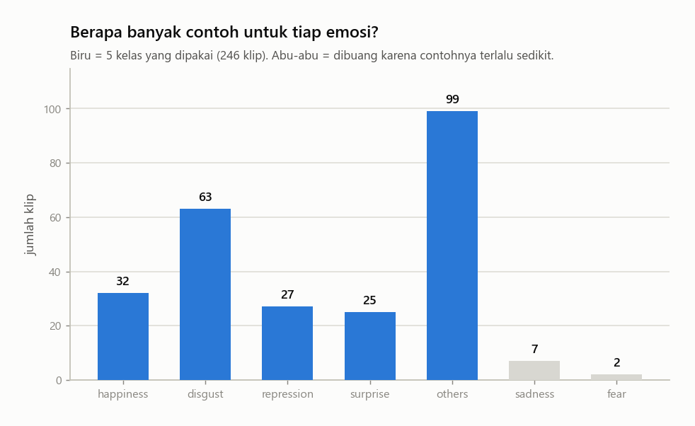
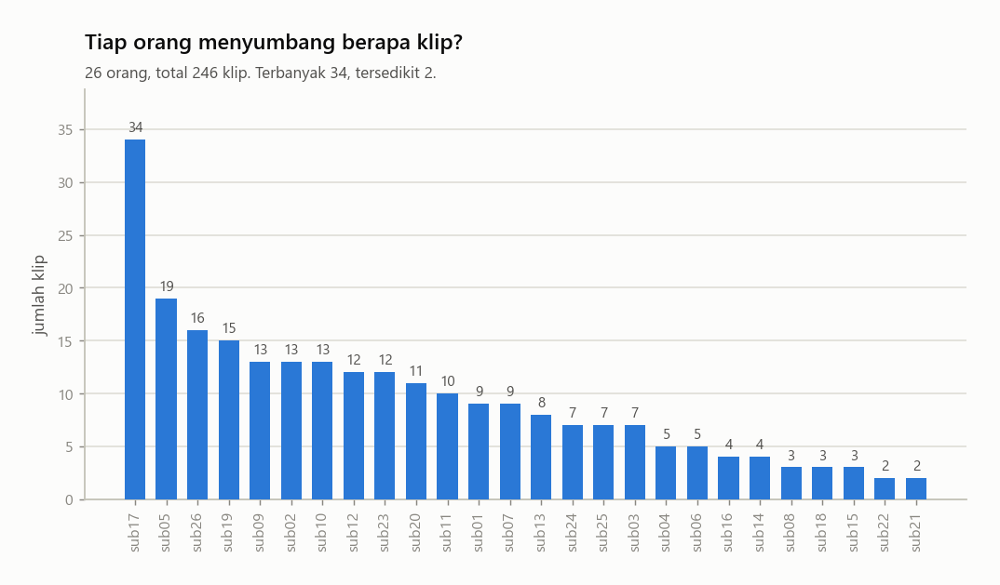
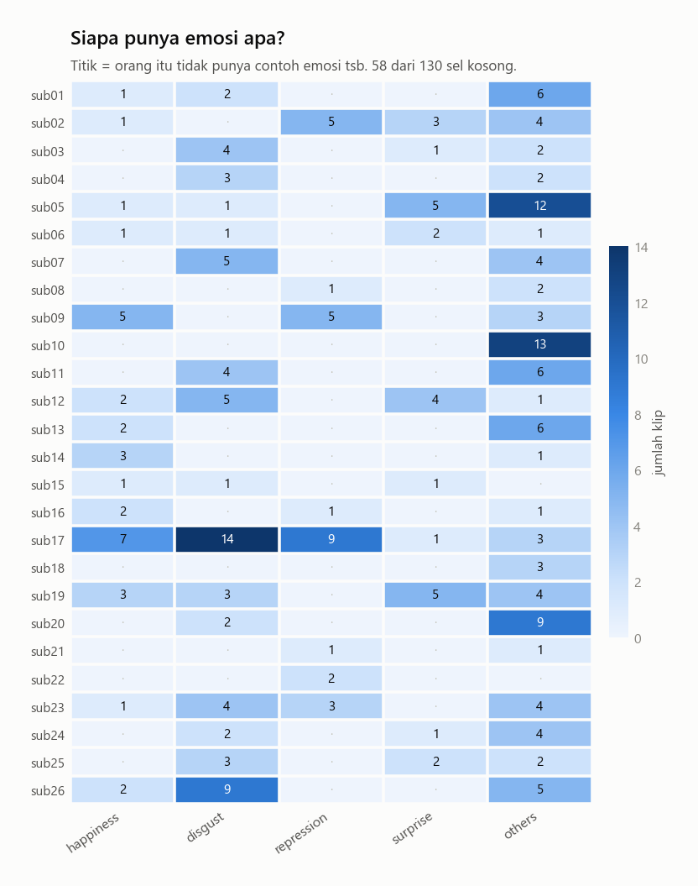
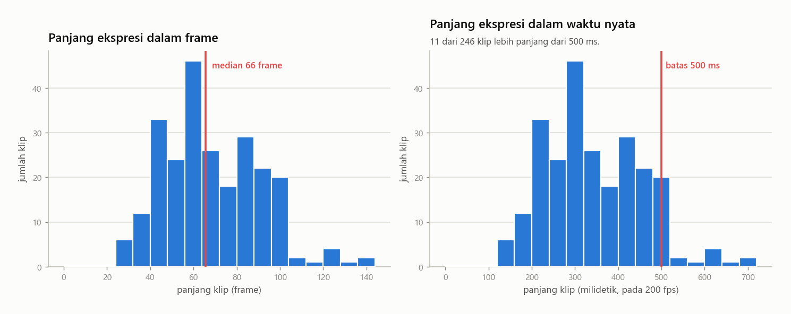
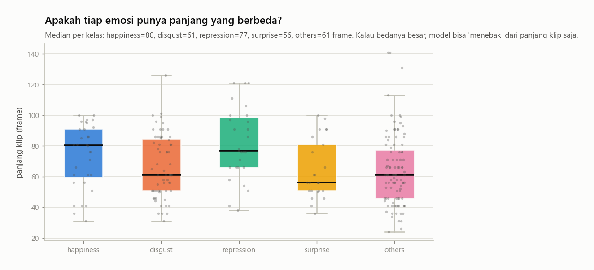
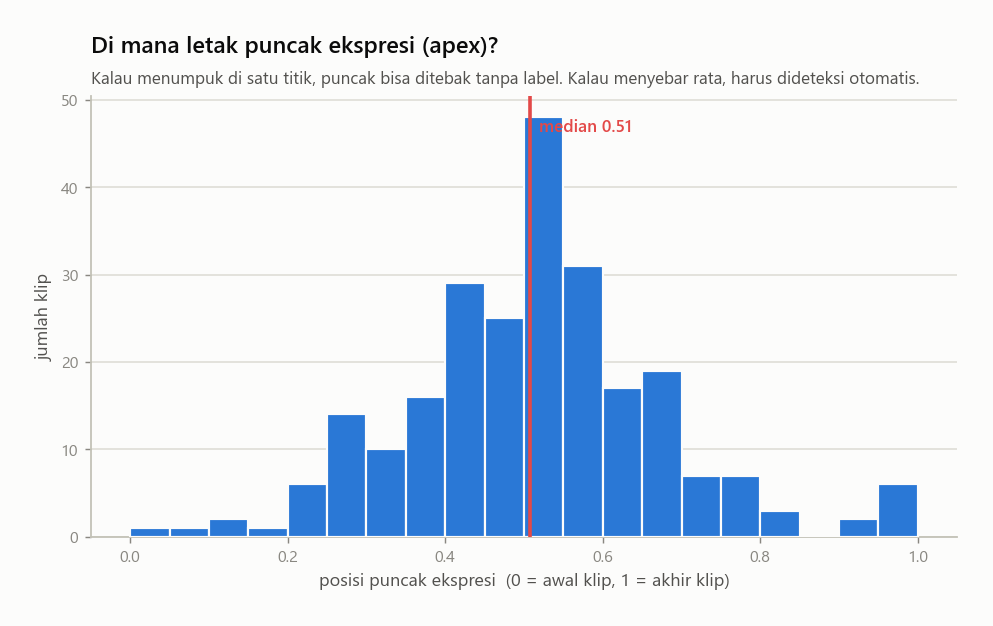
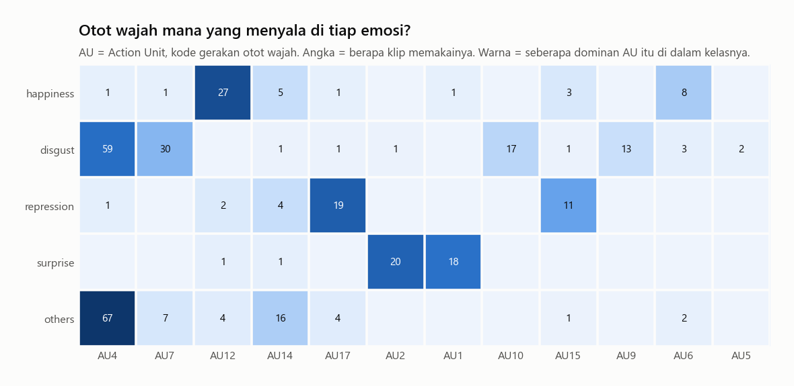
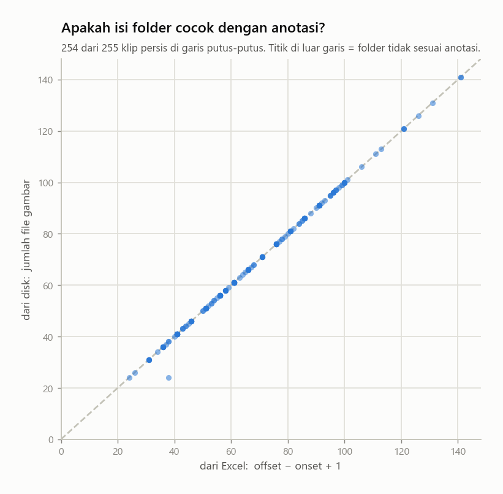
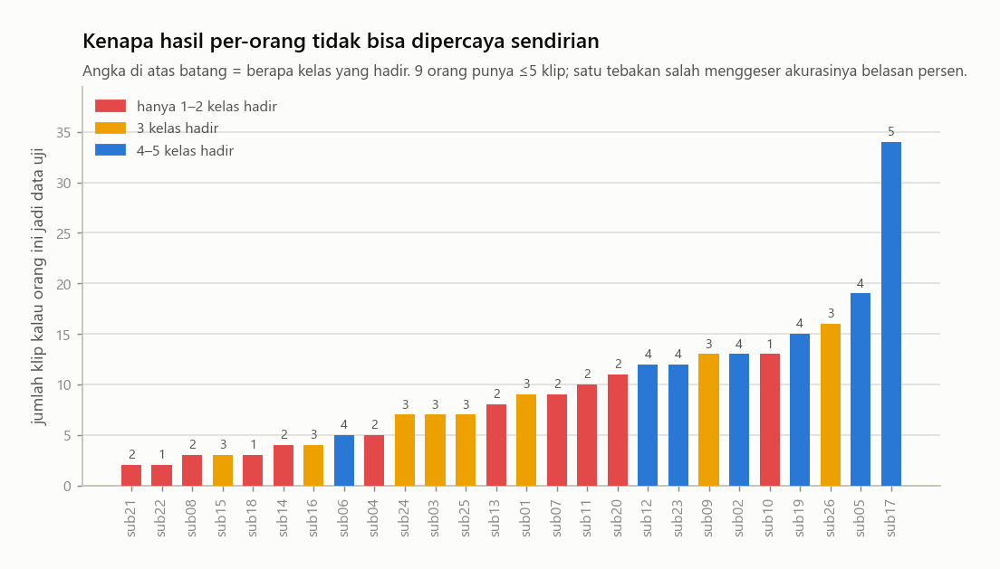

Semua angka dan grafik di halaman ini dihitung hanya dari file Excel
anotasi dan dari nama-nama file di folder Cropped.
Tidak ada satu pun gambar yang dibuka, didekode, atau ditampilkan.
255
klip di anotasi
246
klip dipakai (5 kelas)
26
orang
4.0×
ketimpangan kelas
66
median panjang (frame)
17,124
total frame di disk
Catatan pemeriksaan otomatis
1 klip tidak punya ApexFrame yang sah (isi '/' di Excel).
1 klip: jumlah file != (offset - onset + 1).
Penomoran frame rapat di SEMUA klip — tidak ada frame yang dilewat.
Sembilan hal yang perlu diketahui sebelum melatih model
1

Datanya tidak seimbang. Kelas terbanyak (others, 99 klip) punya 4.0× lipat lebih banyak contoh dibanding yang tersedikit (surprise, 25 klip).
Kenapa ini penting: kalau model asal menebak others untuk semua input, dia sudah dapat akurasi 40% tanpa belajar apa pun. Jadi akurasi biasa itu menyesatkan — laporkan juga UF1/UAR yang menghitung tiap kelas dengan bobot sama.
2

Tiap batang = satu orang. Tingginya sangat timpang. Beberapa orang menyumbang belasan klip, beberapa cuma segelintir.
Kenapa ini penting: wajah tiap orang beda. Kalau data satu orang muncul di latihan dan di ujian, model bisa lulus dengan cara menghafal wajah, bukan mengenali emosi. Karena itu pembagian data harus per-orang (subject-independent), bukan acak per-klip.
3

Baris = orang, kolom = emosi, angka = jumlah klip. Titik berarti kosong.
Kenapa ini penting: banyak sel kosong. Artinya kalau satu orang dipakai sebagai data uji, sering kali tidak semua kelas ada di ujian itu. Skor dari satu orang saja jadi tidak bisa dibandingkan dengan skor orang lain — hasilnya harus digabung dulu dari semua fold, baru dihitung metriknya.
4

Panjang klip sangat bervariasi; mediannya 66 frame. Karena kamera merekam 200 gambar per detik, itu setara 328 milidetik — memang sekejap, sesuai definisi micro-expression.
Kenapa ini penting: model urutan (sequence) butuh jumlah frame yang tetap, misal 16. Klip pendek harus diregangkan, klip panjang diperjarang. Cara memilih 16 frame itu sendiri adalah keputusan desain yang berpengaruh besar.
5

Kotak = rentang tengah (50% data), garis di dalamnya = median, titik = klip satuan.
Kenapa ini penting: ini pemeriksaan kecurangan tak sengaja. Kalau satu kelas jelas lebih panjang dari yang lain, model bisa menebak benar hanya dari panjang klip — bukan dari gerak wajah. Kalau kotak-kotaknya banyak bertumpang tindih, panjang klip bukan jalan pintas, dan itu kabar baik.
6

Apex = frame saat ekspresi paling kuat. Posisinya dinormalkan: 0 = tepat di awal klip, 1 = tepat di akhir. Mediannya 0.51.
Kenapa ini penting: apex ini ditandai manusia. Di video upload dari HP, label itu tidak ada. Kalau sebarannya lebar (bukan menumpuk di satu titik), berarti apex tidak bisa ditebak dengan aturan tetap seperti 'ambil tengah' — harus dideteksi otomatis, dan itu sumber error tersendiri.
7

AU (Action Unit) adalah kode standar gerakan otot wajah — misalnya AU12 = sudut bibir tertarik ke atas, AU4 = alis mengerut.
Kenapa ini penting: ini memberi tahu di mana di wajah sinyalnya berada untuk tiap emosi, dan kelas mana yang berbagi otot yang sama. Dua kelas yang memakai AU yang mirip akan sulit dibedakan model — kotak ini memprediksi di mana nanti muncul kebingungan di confusion matrix.
8

Sumbu X = jumlah frame menurut Excel, sumbu Y = jumlah file yang benar-benar ada di folder. Garis putus-putus = cocok sempurna.
Kenapa ini penting: ini uji kejujuran data sebelum apa pun dilatih. Titik yang meleset dari garis berarti anotasi dan isi disk tidak sepakat — klip seperti itu harus diperiksa atau dibuang, bukan diam-diam ikut dilatih.
9

Simulasi: kalau satu orang dijadikan data uji, sebanyak apa ujiannya?
Kenapa ini penting: untuk orang dengan 4 klip, satu tebakan salah mengubah akurasi sebesar 25 poin. Itu derau, bukan sinyal. Kesimpulannya: jangan pernah mengambil keputusan dari skor satu fold; kumpulkan prediksi semua fold dulu, baru hitung satu metrik gabungan.